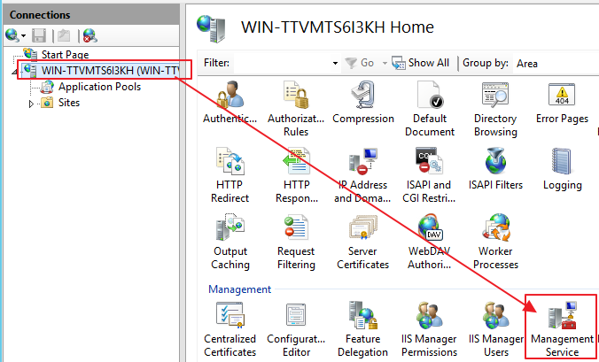

使用 Visual Studio 佈署程式到 IIS
一個不會用佈署工具的網站開發者，當網頁開發完成時，
如何把程式放在 Server 端 Run 起來呢？
答案真的就是直接把全專案程式「放在」IIS所指定的資料夾內。
雖然這樣最直接最快，但是這可能有安全性問題(不相關的檔案被讀取)與檔案重復傳輸浪費頻寬時間問題。
(自已在測試環境可以這樣玩，專案實務上通常不會使用這方式)
直接來看步驟吧
一、Server 端
1、環境為Windows Server 2012 R2，先從Add Roles and Features Wizard確認是否有裝必要元件
{kind=link}
{kind=link}
{kind=link}
2、安裝web platform components
{kind=link}
{kind=link}
3、設定管理IIS的帳戶
{kind=link}
{kind=link}
4、打開遠端佈署的功能
我個人成功方式是按「restart」(可能跟其他人不太一樣，都參考參考)
{kind=link}
{kind=link}
5、設定站台管理權限給Brooke使用者(如果沒有出現Deploy選項請重開IIS)
{kind=link}
{kind=link}
6、記得防火牆port 8172 要打開
{kind=link}
7、Web Deployment Agent Service、Web Management Service也要看有沒有開
{kind=link}
二、開發端
1、IIS那邊權限設完了之後，換到開發端做登入佈署動作
{kind=link}
2、一般都選擇Custom
{kind=link}
3、Publish method先以Web Deploy方式為範例
{kind=link}
輸入資料如下
{kind=link}
先Validate Connection一下，有時候會出現安全性警告，可信任先不理會
{kind=link}
須要注意的是，登入帳戶必須要有administrator權限，否則過不了
{kind=link}
4、沒問題之後，剩下選項就選擇適合自已的設定
{kind=link}
即可publish
{kind=link}
使用Web Deploy的好處之一，就是只會幫你上傳有異動的檔案，而不用麻煩你自已選擇要上傳的檔案。
小結：
我有試過想要部署到 server 端為 windows 10 平台上，
但是一直找不到 IIS Manager Permissions 來設定站台管理權限，
由於得不到 server 端所認可的權限，以致於連線失敗，也就部署失敗了，
上網查資料似乎只有人有成功部署到自己 local 端的 windows 10 平台上，
但遠端的 windows 10 平台，似乎微軟不提供這種功能 (這是我猜的)。
參考資料：